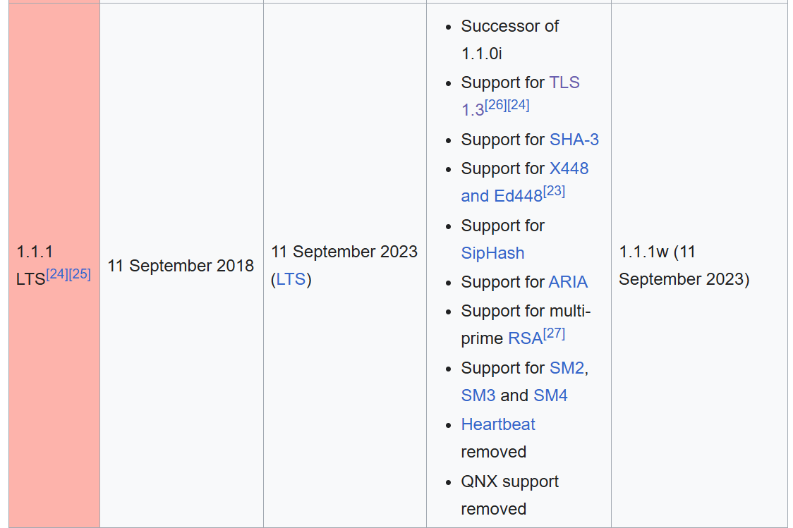

Shimming OpenSSL
Out of Necessity

Braden Ganetsky
C++ on Sea 2025 Lightning Talk
OpenSSL Vulnerabilities
<iframe src="https://openssl-library.org/news/vulnerabilities" />
<iframe src="https://en.wikipedia.org/wiki/Heartbleed" />
OpenSSL 1.0.2

OpenSSL 1.1.1

OpenSSL Vulnerabilities
For the sake of security, update your OpenSSL
😬
The problem
"undefined reference to
SSL_library_init"
SSL_library_init
- https://docs.openssl.org/master/man3/SSL_library_init/
- "The SSL_library_init() and OpenSSL_add_ssl_algorithms() functions were deprecated in OpenSSL 1.1.0 by OPENSSL_init_ssl()."
- Macros are not symbols in the compiled binary
- Preprocessor only
Setup
As a macro
❌
As a function
✔️